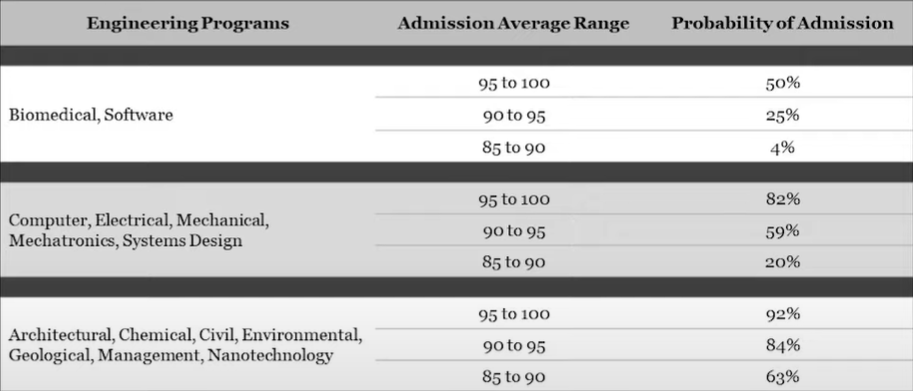

For students applying to Waterloo Engineering.
The Admissions Process and Academic Averages
Overview
This article will cover admission averages in their requirements, how they’re calculated, what grades you’ll need to get into a specific program, as well as how your average plays in with the various other factors in the overall admissions process to decide who gets admitted.
The majority of this page will be focused on academics, the most important factor during the admissions process. For programs in Waterloo Engineering, the expectations are pretty high. So what exactly does it take to get into Waterloo Engineering?
Basic requirements for Engineering
The average of your top 6 courses is the mean average of the following courses (assuming you’re an Ontario applicant, otherwise this will correspond to the appropriate equivalent in your region):
- MHF4U (Advanced Functions)
- MCV4U (Calculus and Vectors)
- SPH4U (Physics)
- SCH4U (Chemistry)
- ENG4U (English)
- Any other 4U or 4M course
Waterloo Engineering admits accepted applicants in two rounds; one in late March/early April, and one in mid-/late May.
During consideration for admission in the first round, there may not be any grade information for one or more of the
required courses due to taking place before midterm marks are released in the second semester where an applicant might
happen to be taking the aforementioned required courses. In that case, marks from grade 11 courses may be considered.
For all required courses, a minimum grade of 70% is required. However, all Engineering programs require a conditional
admission average of 85% in order for an offer of admission to remain valid at the end of the academic year.
Exception: SCH4U (Chemistry) is not required for the Architecture program (distinct from Architectural Engineering).
This slot is instead replaced with another 4U or 4M elective course. Additionally, the minimum grade for ENG4U is 75%
instead of 70%.
Additional program-specific requirements
Architecture
After your initial submission of program choices to the Ontario Universities’ Application Centre (OUAC), but before the final admission decisions are made, the applicant pool will be narrowed down to the top 400-500 individuals and these selected applicants will be asked to complete the following:
- a 25-minute interview including a presentation of a portfolio of your recent creative work
- a précis (concise reduction/summary) of an English text
The requirements for each of these (including what to do if you can’t complete these in person) are listed on the official University of Waterloo School of Architecture website.
Additionally, the following are strongly recommended for students interested in applying for the Architecture program:
- 3M and 4M visual art courses (e.g. AVI4M)
- Independent art studies (i.e. private art lessons)
- Creative and cultural studies, such as high school visual arts and history courses (e.g. CHY4U)
Software Engineering
In addition to the aforementioned base requirements, one or more of the following are needed to demonstrate your experience and skills developing well-structured, modular programs. You’ll want to have as many things that make you stand out as possible, as this program is incredibly competitive and is the most difficult program at the University of Waterloo to be admitted to.
- Strong performance in programming courses (e.g. ICS3U/4U)
- Strong performance in a programming contest (e.g. Canadian Computing Competition, Educational Computing Organization of Ontario Computer Science Programming Competition(ECOO-PC))
- Significant work experience in a related field
- Lots of programming experience
All of these items and any other similar demonstration of your capabilities and experience can be explained in the Admissions Information Form.
Courses taken outside of day school and repeated courses
Generally, taking any of the required courses outside of regular day school and/or repeating required courses significantly reduces your admission prospects, unless there are extenuating circumstances explained in your AIF. In most cases, your calculated average (yes, your entire average!) will be lowered by 5%, which makes a huge difference considering how competitive Waterloo Engineering is to begin with. If that doesn’t sound serious, let's just say it has the same impact as dropping 30% in one of your courses. Not surprisingly, it is strongly recommended to take your required courses in day school in one attempt, if possible. The 5% cut can be reduced or mitigated only upon explanation of extenuating circumstances in the appropriate section of the AIF.
Other notes to consider
- Transfer credits from IB, AP, A-level, etc. courses are not granted in Waterloo Engineering due to the strict requirements of accredited professional university engineering programs in Ontario. However, schools that offer these kinds of courses can demonstrate how hard you work in your academics and your ability to succeed with university-level content, and you can make a note of those on the AIF if you so desire. Taking these kinds of courses has been noted to help decrease your adjustment factor by a slight amount to boost your admissions score, however, so all is not lost. You can also mention these on your AIF.
- SAT/ACT/etc. scores don’t affect your admission. However, you can also make a note of those on the AIF if you so desire similarly to the above.
- Visa applicants typically have a disadvantage against Canadian applicants, and their admission decisions are also heavily influenced by English proficiency and requirements.
- The University of Waterloo does not take your OUAC rankings into account when making admissions decisions, unlike some other universities. I suggest ranking more competitive programs ahead of programs at the University of Waterloo when these other universities (e.g. University of Toronto) do consider that.
Admission Averages by Program
As you'd probably expect, the minimum requirements probably aren’t enough to cut it for how competitive Waterloo Engineering is. So we ask the age-old question: “What average should I have to be admitted into my program?”
Waterloo Engineering doesn’t have cutoffs for admission consideration, but nevertheless, a higher average is going to correspond to a higher admission chance. However, not all Waterloo Engineering programs were created equal, meaning some of the programs are more competitive and generally require better averages to be admitted in order to stand out from the rest. For more competitive programs, individual selection is used to better decide which applicants stand out more; this is where the AIF has a greater impact.
Competitive averages are listed below, you should be aiming for these averages to get into these programs, but remember that having these averages doesn’t necessarily guarantee that you’ll be admitted.
- Architecture: low-mid 80s to be considered for an interview (including at least 75% in English (realistically 80%) and high 70s in each of the other required courses). Interview is based on individual selection.
- Architectural Engineering: mid 80s with individual selection.
- Biomedical Engineering: mid 90s with individual selection.
- Chemical Engineering: high 80s.
- Civil Engineering: mid 80s.
- Computer Engineering: low 90s with individual selection.
- Electrical Engineering: low 90s with individual selection.
- Environmental Engineering: mid 80s.
- Geological Engineering: mid 80s.
- Management Engineering: low 90s.
- Mechanical Engineering: low 90s.
- Mechatronics Engineering: mid 90s with individual selection.
- Nanotechnology Engineering: high 80s.
- Software Engineering: high 90s with individual selection based on software development experience and extracurricular activities as highlighted on the AIF.
- Systems Design Engineering: low 90s with individual selection.
Reminder: these averages are not set in stone. Even if your average isn’t quite at the levels listed above, you can still be admitted with a good AIF/video interview. These averages also do not consider the adjustment factor.
The following are charts of admission chances based on academic averages only, one for Canadian applicants, and one for visa applicants. Data is from fall 2019 applicants, so the data varies from the above information. Again, visa applicants tend to have a disadvantage compared to Canadian applicants.

An official chart from the UWaterloo YouTube channel detailing rough admission chances vs. averages for fall 2021: (Note: for students applying for entry in fall 2021, admission chances are more generous this year due to the impact of the COVID-19 pandemic.)

Again, these chances don’t factor in adjustment factors, AIFs, or video interviews.
Grades vs. AIF vs. Interview vs. Adjustment Factor
As you know, grades aren’t the only part of the admissions process; the AIF, video interview, and adjustment factor are the other things that complete your applicant profile, but they’re not weighted equally.
Academic average
As stated before, your academic average is the most important factor when it comes to your admission decision, and is the equally weighted mean average of your top 6 courses (including required courses).
Admission Information Form
The AIF is next. The Admission Information Form is an opportunity to share about yourself, your achievements, your goals, extenuating circumstances, and more. The AIF is mandatory for engineering programs and not submitting it will deny your admission outright unless you have a really good reason that is appealed to them. The AIF is graded out of 5 points, and is added to your score. Most average AIFs are given a 3. The minimum score is 0.3 if incomplete and 0.5 if complete. Higher scores are given for exceptional AIFs due to excellence as well as participating in contests and events offered by UWaterloo. For more details, check out the page on AIF tips and tricks.
Video interview
The video interview is another element of your admission profile, and is also marked out of 5. Average submissions normally end up netting a 3. Although optional, you basically forfeit potentially 5 points that can be added to your total applicant score, and for more competitive programs, it’s basically required to have a ghost of a chance, unless you have a 100% average, and even then, I’m not too sure. Plus, everyone else is doing it, and you lose nothing by going for it, ergo, you’re at a huge loss if you decide not to submit an interview. An explanation of the video interview process, as well as how to prepare for it, can be found here.
Adjustment factor
The last factor affecting your admission chances is the adjustment factor. It’s something you have no control over, make of it what you will. You might have come across the term “adjustment factor” a couple times throughout this website, the official UWaterloo website, or elsewhere. What is it? Although not something explicitly given on the official UWaterloo website, the adjustment factor is a number that is given to some Ontario schools based on how well engineering applicants from those schools do in their first year at Waterloo Engineering, basically telling you how large the gap is between their grade 12 averages and first year averages. The lower, the better. UWaterloo likes to be secretive about this information, so you won’t find this information on their website.
The adjustment factor for your school (or 16, for the 90% of high schools that don’t have one) is subtracted from your admission score. This can mean good news for people from schools with low adjustment factors, like those coming from Québec’s CÉGEP system with a 5% adjustment factor, but don’t panic if that’s not true for you, you can definitely get into your desired program if you work hard enough and put in the effort you need into your academics, AIF, and interview. Regardless, it can still present a significant advantage or disadvantage, as adjustment factors can range from around 10 to 30, a huge margin that can give people with the same academic averages massively different chances of being admitted. For example, someone with an adjustment factor of 11 has a 5% advantage over someone with the default adjustment factor of 16. A list of adjustment factors for Ontario high schools can be found here. Keep in mind that this information is a few years old and recent information is hard to find outside of invoking the Freedom of Information and Protection of Privacy Act, which is a huge hassle.
Calculating your overall admission score
Your final admissions score is calculated by adding the average of your top 6 courses (out of 100), AIF score (out of
5), and interview score (out of 5), and subtracting your adjustment factor. Say you have a 90% average, you think you
did ok on both the AIF and interview, netting a 3 on both, and your school’s adjustment factor is 13. Your
total admission score would be 90 + 3 + 2 - 13 = 82. Keep all of this in mind when choosing what to prioritize spend more time on during the admissions process.
I hope that after all this information you'll know what you'll need to be able to apply and get into the Waterloo Engineering program of your choice, and how to carry that out. All the best, and we hope to see you at the University of Waterloo soon!